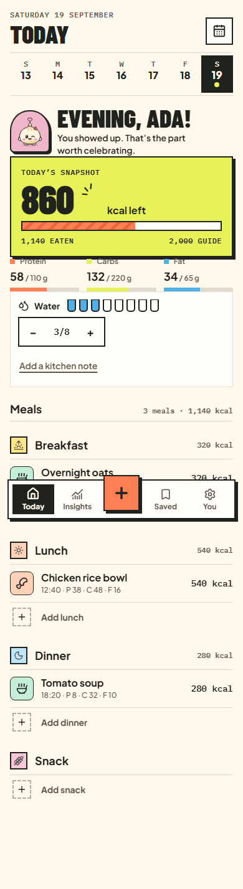
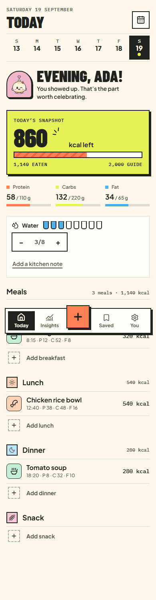
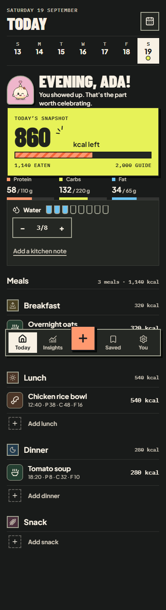
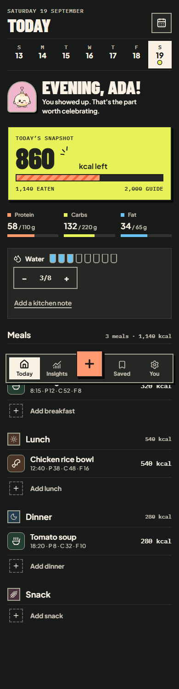
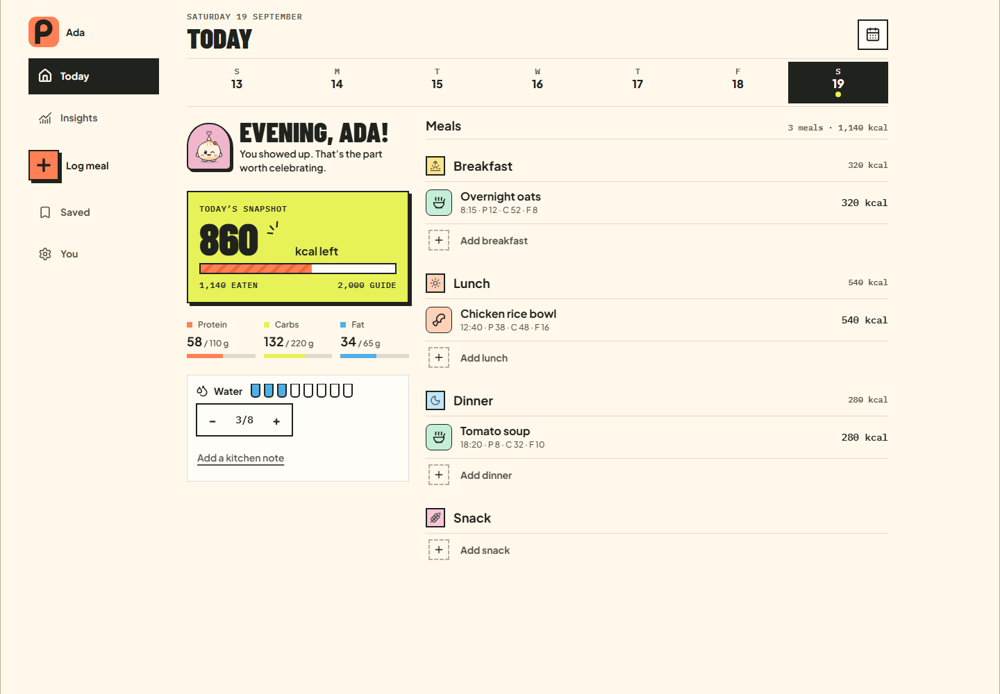
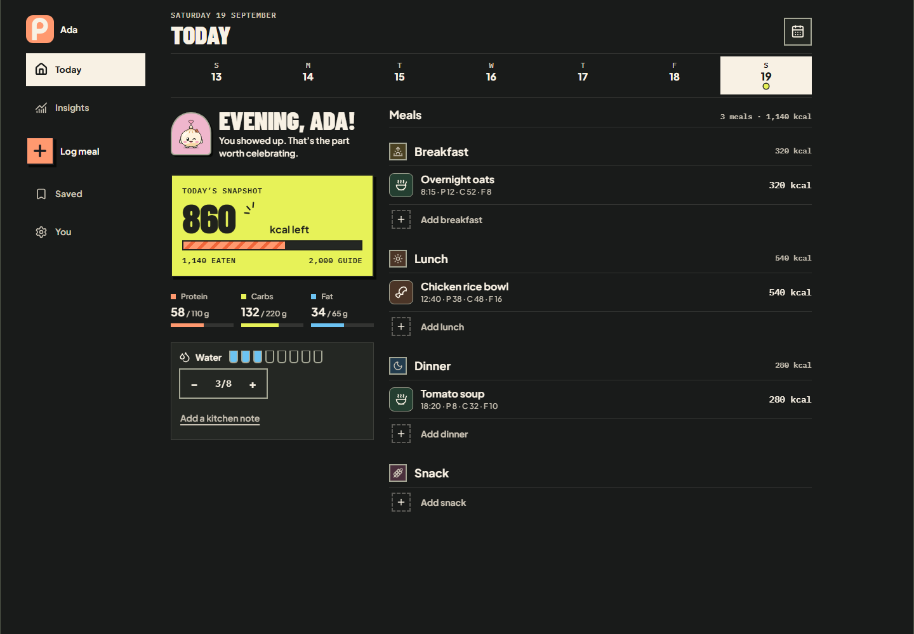

Poiem UI review · 4 October 2026
Only the Today summary spacing has changed. The three stacked gaps are now 24px below 1120px; desktop retains its existing spacing. All captures use the same seeded data and local browser.
Ranked fix list · Measurements
Today · 390x844 · light
Before
After · 24px gaps
Today · 390x844 · dark
Before
After · 24px gaps
Today · 1440x1000 · light
Before
After · 24px gaps
Today · 1440x1000 · dark
Before After · 24px gaps
After · 24px gaps